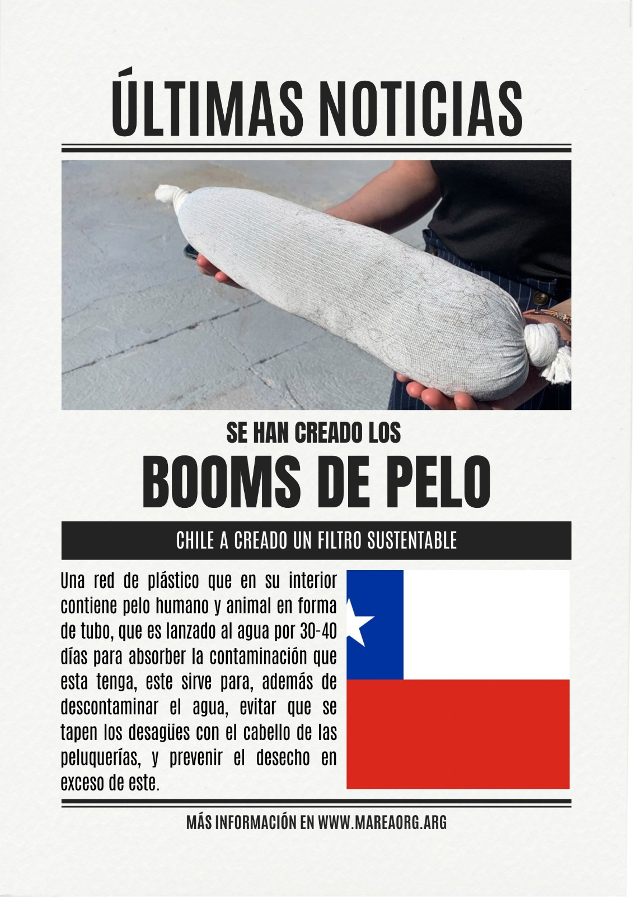
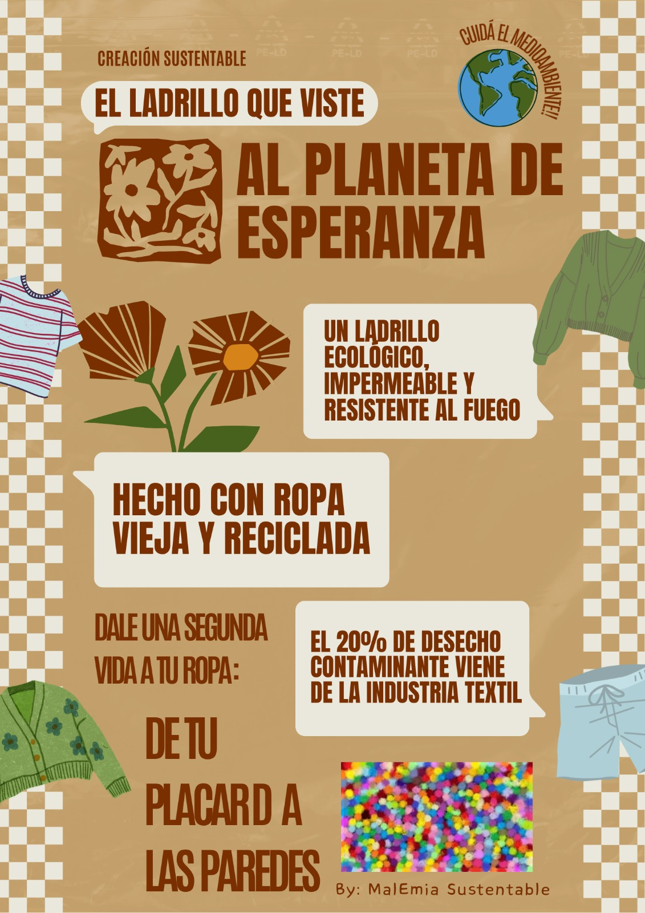
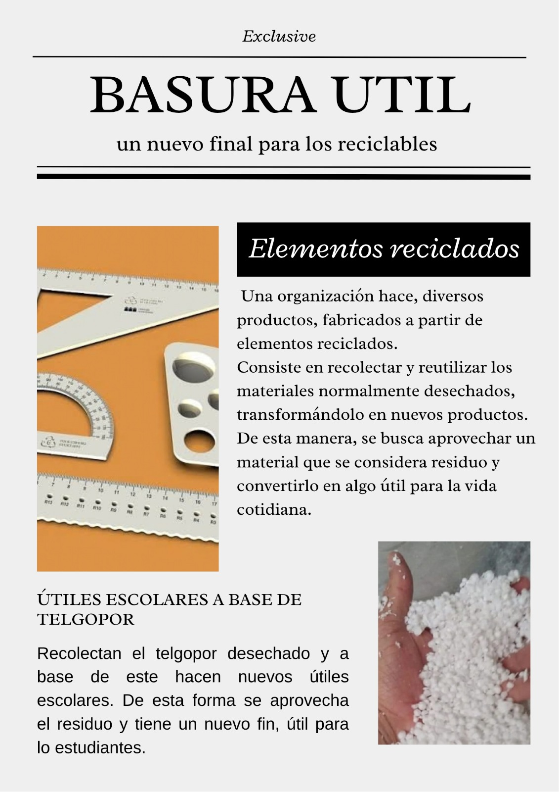

Movimiento Argentino de Restauración Ecológica Acuática

Chile ha creado un filtro sustentable compuesto por una red con pelo humano y animal para descontaminar el agua y evitar la obstrucción de desagües.

Un ladrillo ecológico, impermeable y resistente al fuego hecho con ropa vieja para darle una segunda vida a los desechos de la industria textil.

Transformación de residuos y telgopor desechado en útiles escolares esenciales, aprovechando materiales para la vida cotidiana.